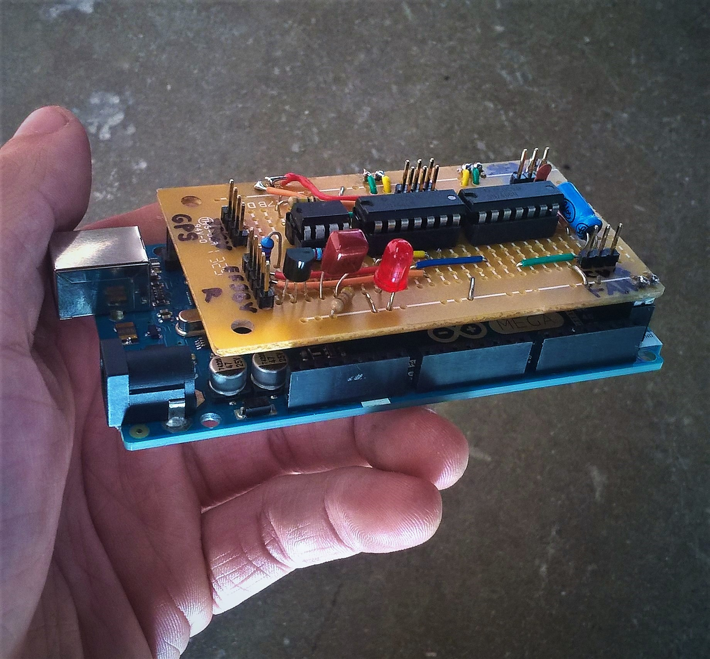

Pulse Width Comparator
Hypothetical problem: I have a system with multiple PWM controlled actuators, and I desire to have the capability to remotely switch between autonomous feedback control and manual radio control. Ideally, I would like the manual controls to continue to work in the case that the feedback controller (MCU) stops working. And let's say I have an 8 channel radio reciever with 8 individual PWM outputs.
The task of switching between manual and autonomous control for N actuators is easily accomplished with N parallel 2 input multiplexers. This is no big deal. Controlling the multiplexers on the other hand requires some work. If we are to use one of the RC channels to do the task, we need to be able to assign two distinct digital values to two different pulse widths, or ranges of widths in some way. In other words, we need a circuit which effectively compares the pulse width from a reciever channel with a reference, and output either a high or low signal accordingly.
Time Measurement: The Integrator
From what I gather via googling, most multichannel RC systems use a ppm signal with delays ranging from 1 to 2ms, with a frame period of approximately 20ms. Some sources claim 22.5ms, some 27ms... but the 1 to 2 ms range for pulse separation (or pulse width once decoded as separate pwm channels) seems by all accounts to be the standard. For the purpose of solving our problem, we simply need to be able to detect the difference between a long and a short pulse.
An easy analog way to infer the duration of a pulse or something is to use an integrator: starting with zero at the output, and applying a constant input over the duration of a pulse, the output voltage will indicate the pulse duration, given that you know the values of your resistor and your capacitor, and the input voltage. We could make a very accurate pulse width to analog voltage converter using a resettable integrator along with a sample and hold circuit and some fairly complicated control pulse generating circuitry, but two things: (1) we don't need to do that, and (2) we don't want to do that. There is an easier way.
Modification of a Common Circuit
Probably everyone has seen the following circuit in the LM324 datasheet

As it turns out, this circuit will do exactly what we want if we (1) remove the feedback, and instead apply the incoming pulse signal to the base of the bjt and (2) change a few resistor values and the capacitor value. The circuit we are interested in looks like this:

Since the bjt is operating as a switch, the integrator section takes two distinct configurations: one when the switch is open (pulse signal low) and another when the switch is closed (pulse signal high).

(Note that the voltage labled Vth is the thevenin equivalent voltage formed by the R1/R2 resistor divider across Vdd: Vth = R2/(R1+R2)Vdd)
The output of a simple op amp integrator like this is given by:
\[v_{int}(t) = -\frac{1}{RC}\int_0^t{v_{in}(\tau)\,d\tau}\]where "Vin" is the difference between the voltage at the integrator input and the voltage at the op amp's noninverting input (the reference input). In the circuits above, the inputs are constant voltages, so the integrals reduce to the products of the input voltages and the elapsed times in seconds. For configuration 1, we have:
\[v_{int(low)}(t) = -\frac{Vdd}{2R_1 C_1}t\]For configuration 2, we have:
\[v_{int(high)}(t) = \frac{(R_1 - R_2)Vdd}{2R_1 R_2 C_1}t\]In the time domain, these are ramps with well defined slopes. This is great.
The second op amp fors a comparator with hysteresis (a Schmitt trigger) This also takes two configurations: one when the output is high, and one when the output is low.
If we had a rail to rail op amp, the threshold voltage (the input of v+ to the op amp) in the first case is given by:
\[v+ = \frac{R_8}{R_8 + R_6||R_7}\frac{Vdd}{2}\]The threshold voltage in the second case is:
\[v+ = \frac{R_8 + 2R_6||R_7}{R_8 + R_6||R_7}\frac{Vdd}{2}\]The difference between these two tells us the maximum signal amplitude centered at half of Vdd that will not cause a change in the output.
\[V_{tol} = \frac{R_6||R_7}{R_8 + R_6||R_7}Vdd\]Now let's figure out what to do with this information.
Design 1:The Integrator Section
We want this circuit to be able to distinguish between long pulses (1.5 to 2ms) and short pulses (1 to 1.5ms). Can this be done? Well, looking at the output equations above, we see that when the switch is open (low input signal) the slope is negative. On the other hand, when the switch is closed (high input signal), the slope will be positive if R1 > R2. So an incoming pulse signal can cause the output to be something like an asymetrical triangle wave if the right component values are chosen.
If we were trying to get a stable periodic output, we would want the ratio of the slopes to satisfy the following:
\[m_1 T_{low} = -m_2 T_{high}\]If we did this, we would expect the integrator's output to look like this:
if the pulse width were increased, the increase in the output voltage over the interval "t high" will excede the magnitude of the decrease over the interval "t low". The average value of the output would then increase until the amplifier saturates. The opposite would be true if the pulse width were reduced -- the negative slope will prevail and the output will saturate in the opposite direction. This is exactly the behavior we were looking for. So let's design this thing to give a stable asymetrical triangle wave output with an input with a period of 20ms and a pulse width is 1.5ms. Let's set the ratio of the slopes to be:
\[\frac{m_2}{m_1} = -\frac{20ms - 1.5ms}{1.5ms} =-\frac{37}{3}\]Using the equations above, we get:
\[\frac{m_2}{m_1} = \frac{\frac{(R_1-R_2)Vdd}{2R_1 R_2 C_1}}{-\frac{Vdd}{2R_1 C_1}} = \frac{R_2-R_1}{R_2}\]Combining and simplifying, we get:
\[R_1 = \frac{40}{3}R_2 \approx 13.33 R_2\]The next thing to decide is what the magnitudes of the slopes should be. There are a couple considerations: since we are opperating with a Vdd of 5V, and a pulse period of 20ms, we certainly don't want any slopes greater than 250 V/s (when pulse signal is low). We don't even want to come close to that. We also don't want the circuit to respond too slowly. Decreasing the slopes has the effect of increasing the noise margin, and at the same time has the effect of reducing the speed of the cirucit. Let's say we want this thing to be able to do it's job in under 1/2 of a second. The minimum slope would then be 10 V/s (when pulse signal is low).
Using these requrements and the equation above for the output voltage during the "off" interval, we get:
\[10 < \frac{5}{2R_1 C_1} < 250\]The time constant should thus be in the range:
\[10ms < R_1 C_1 < 250ms\]And that's all it takes. I made a quick version of this circuit using resistor and capacitor values that came close to giving the ratios and time constants I wanted.
I have an OSEP pro mini providing the PWM signal, with the pulse width controlled by the pot to the right of it. The pulse width comparator circuit is composed of the LM358 dual op amp chip (the 8 pin dip chip) and all the resistors and capacitors in its viscinity. The two 7400 quad nand gates are wired as 2 2 input multiplexers -- one set of inputs is grounded and the other set is held high, and I have blue and green LEDs on the outputs of the multiplexers to indicate which inputs are active.
The R1/R2 ratio I ended up with was 15 -- this means we expect the circuit will produce a stable output when given a pulse with a width of 1.25ms. The time constant I ended up with was 30ms -- this is on the fast end. We expect the output swing of the stable triangle wave to be about a third of Vdd. Let's look at that triangle wave:
This is exactly what we expected.
Here are some more scope shots.
Above, I applied a 1ms pulse, and below I applied a 2ms pulse:
Design 2: An Appropriate Voltage Comparator
When I told you that the ratios of resistances determined how big of a signal the comparator will ignore, I wasn't lying to you. Why would you even think that? If we ignore the fact that we chose some values for R1 and R2 and C1 already, we might want to look at a general design equation for this thing. We do this by setting the maximum voltage swing over the "off" interval to be less than size of the tolerance band of the comparator. After simplifying, we get this:
\[\frac{T_{low}}{2R_1 C_1} < \frac{R_6||R_7}{R_8 + R_6||R_7}\]Remember that the right hand side of the equation was derived under the assumption that we had a rail to rail op amp, which the LM358 is not. For this reason, we either make the time constant a little longer, or we make R8 a little smaller. It turns out that if R6=R7=R8, and the time constant is 30ms like we had before, the above equation is satisfied. But since the op amp saturates at a level higher than ground, and at a lower level than Vdd, we still get glitches. One easy way to solve this problem is to increase the size of the capacitor. I had it at 200nF, so I changed it to 680nF because that is what I had near me. Now the time constant is 102ms, which is still within our requirements, and everything is as it should be.
Concluding Thoughts
I described a pretty simple circuit that can be pretty useful. The moral of the story is that, in certain situations, a simple analog circuit can save you a good amount of processing power and memory.
Below, I have a picture of a prototype Arduino Mega sheild which I gave to a group of CSULB Aerospace students.
The shield acts as a hub for the actuators, sensors and control inputs required for a powered paraglider, which was to be used as the guided descent stage of a recoverable rocket payload. The circuit is essentially the same as the breadboarded circuit described above, with some added IO for a GPS unit, a 9 channel radio reciever, a servo and a BLDC fan motor. One channel from the reciever is used to control the pulse width comparator, which selects the source of the two actuation control signals -- either manual control from the radio reciever, or autonomous control from an adaptive digital controller programmed into the Arduino.